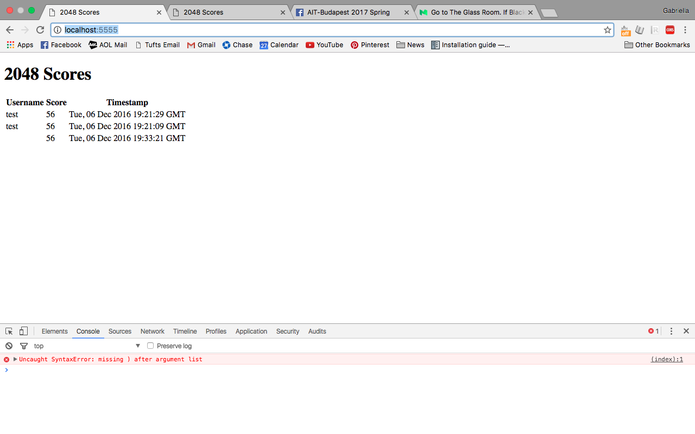

Security Report for Wesley Wei
Introduction
I was assigned to analyze any security issues with Wesley Wei's webpage and API from Assignment 3. For the most part, he knows a lot about proper coding practices and was able to make his webpage fairly secure.
Methodology
To test the security of this webpage, I used cURL commands in the terminal, sent and requested data via Postman, and used Tamper Data to analyze reports on the reliability of the webpage and send missing or incorrect data.
Abstract of Findings
Wesley removed extraneous characters from user input in his web application, so it was fairly secure from Cross-Site Scripting and will not execute foreign JavaScript. There were a few bugs that could lead to security problems and corrupt data.
Issues Found and Technical Analysis
The web app does not allow the user to submit number in string format:
Wesley builds the page from scratch for the homepage and the "/scores.json" page, every time they are loaded. This is another safegaurd against XSS. However, adding code in script tags still messes with the webpage and gives error, even though the app still runs and does not execute any foreign code.

While using cURL commands to POST to Wesley's API, the commands were breaking and I was not able to send a POST request with a user's username, score, and grid
Wesley does specify the HTML encoding to protect against Cross-Site Scripting, but there are even more secure ways to do that. Ideas for additional practices are available at:
Security: XSS
Conclusion